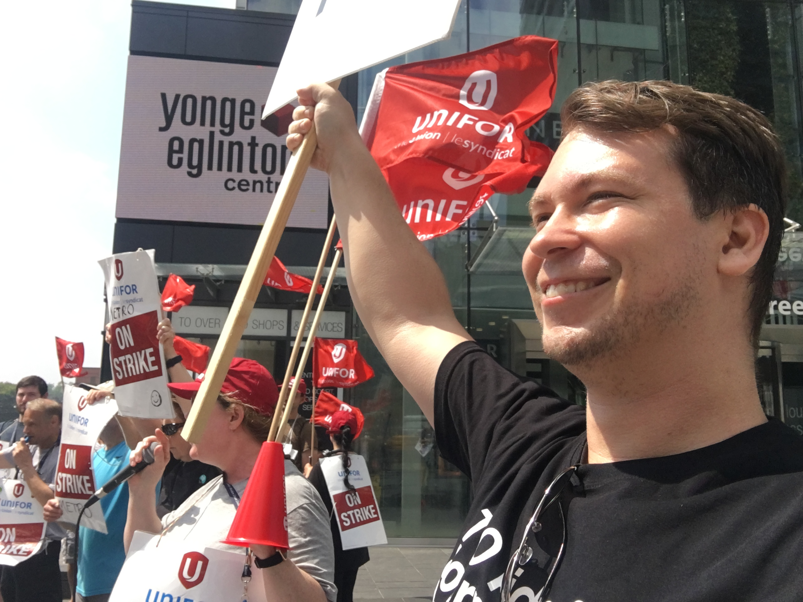
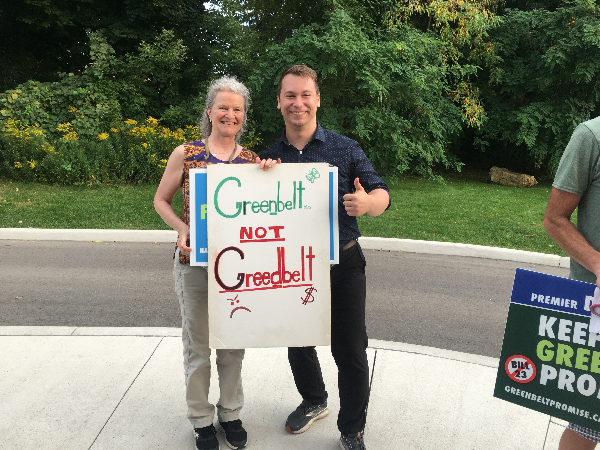

Building a Stronger, Fairer Hamilton — Together.

I'm Alex Ballagh — a Proud Hamiltonian, Community Organizer, and National Program Coordinator. I’ve spent years on the frontlines of housing, health, and democratic reform: elected as Co-Chair of Hamilton ACORN to fight for tenant rights and community solidarity; serving as National Program Coordinator for the Peer Wellness Program at the National Overdose Response Service (NORS) to build a nationwide support network for those most in need; and meeting MPPs as a Legislative Delegate of the Hamilton Health Coalition fighting for better healthcare and fairer wages for our lifesaving healthcare workers.
Even during my 2018 Masters thesis, I was elected Vice President of the Graduate Student Association of McMaster University where I successfully reestablished and expanded mental healthcare services to all students after the university had cancelled it as a cost-saving measure. I also founded the McMaster Graduate Clubs branch of the GSA offering students the opportunity to foster communities of hobbyists, activists, and social clubs to expand their engagement and graduate experience.
Hamilton is a city of strength, diversity, and resilience, but too many of us are being left behind. Whether it's skyrocketing rents, inaccessible transit, crumbling infrastructure, or closed-door decision-making at City Hall, people in Ward 8 are ready for change. And so am I.
Outside of my research and instructional work at McMaster University, I spend my off hours training communities in overdose prevention as a SOPEN Naloxone Workshop Facilitator, organizing as a Delegate for FairVote Canada, and advocating for public healthcare as an Organizer and Delegate to the Ontario Health Coalition, serving on the Site Selection Committee and Fundraising Event Planning Team for the Hamilton Alliance for Tiny Shelters (HATS).
This campaign isn’t about politics as usual. It’s about people. It’s about building a city where every neighbour is heard, where affordability and climate action are priorities, not afterthoughts, and where we fight for justice, not just promises.
Join us as we knock on doors, build connections, and bring hope and action to every street, every building, and every household in Ward 8. Together, we can reshape Hamilton's future — and it starts right here, with you.
